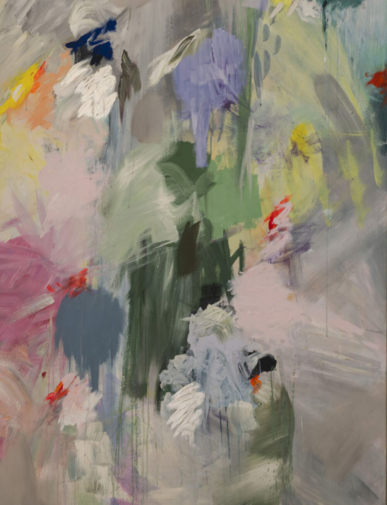

Your Art Workshop
Wenn du etwas Besonderes für dein Zuhause haben möchtest und gerne selbst malst und gestaltest, dann ist mein Projekt „Your Art“ genau das Richtige für dich/euch.
Mit „Your Art“ male ich mit bis zu fünf Personen jeden Alters gemeinsam. Entweder nur mit Kindern, mit einer einzelnen Person oder einer ganzen Familie.
Wir konzipieren zusammen – denn es ist wichtig zu wissen, welche Wand euer Kunstwerk schmücken und in welchem farblichen Rahmen es sich bewegen soll.
Es braucht keine Vorkenntnisse, sondern nur Freude am Ausdruck und den richtigen Rahmen.
Ihr lernt Grundlagen der Malerei und bekommt je nach Bedarf Anleitung und Inspiration bei der Gestaltung. Das Ergebnis ist eure Geschichte – übersetzt in ein Bild, das euch zuhause jeden Tag Freude bereiten darf.
Ich bin selbst immer ganz begeistert, welche wunderschönen Projekte dabei entstehen.
Meldet euch einfach bei mir und wir vereinbaren zusammen einen Termin für die Planung und den Malworkshop!